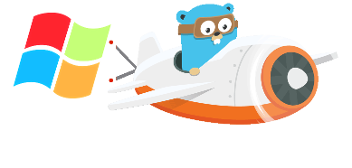
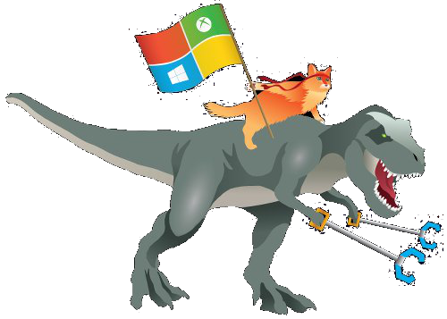
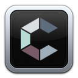
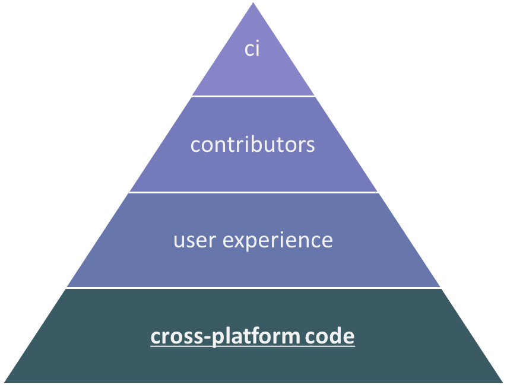
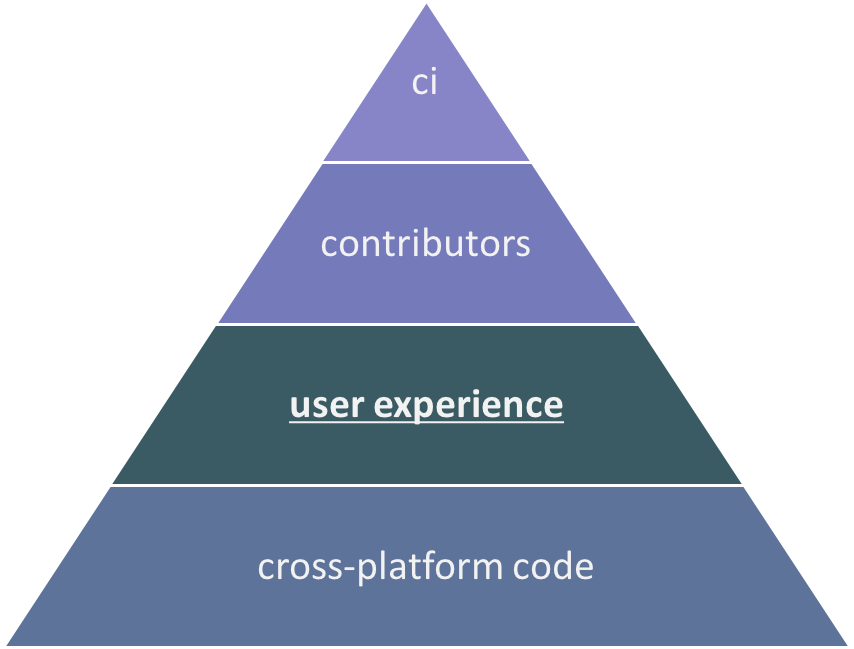
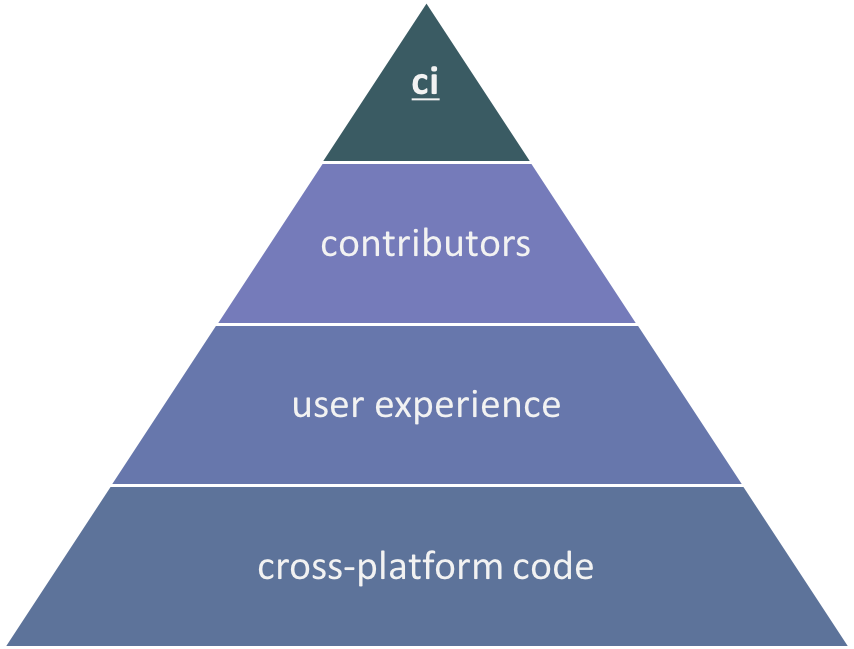
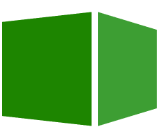

Grow your users from an unlikely source:
Windows developers

Carolyn Van Slyck
| Expecations | Reality |
|---|---|
| Easy to install | ... if you BYOB |
| It just worksTM | ... on my Mac |
| Documented | ... only for bash |
| Accepts PRs | ... if you can build it |
Support ALL THE PEOPLES!

Rackspace Developer Experience Team
Occasional Windows Ambassador / Apologist
My Playground
|  | ||
| dvm | carina | rack |
Cross-Platform Code
Cross Compilation
GOOS=windows GOARCH=amd64 go build -o magic.exe
Conditional Compilation
- magic.go
- magic.386.go -
// +build 386 - magic.amd64.go -
// +build amd64 - magic.darwin.go -
// +build darwin - magic.nix.go -
// +build !windows - magic.windows.go -
// +build windows
magic.go
func getMagicFilePath() string {
return filepath.Join(getUserHomeDir, "magic" + fileExtension)
}
magic.nix.go
// +build !windows
const fileExtension string = ".sh"
func getUserHomeDir() string {
return os.Getenv("HOME")
}
magic.windows.go
// +build windows
const fileExtension string = ".ps1"
func getUserHomeDir() string {
return os.Getenv("USERPROFILE")
}
Environment Variables
| *nix | windows |
|---|---|
| home | userprofile |
path : | path ; |
| shell | 💩 |
| tmpdir | tmp/temp |
| - | pathext ✨ |
File Paths
- Stick with
import "path/filepath" - Windows is mostly cool with
/or\ - Use quoted paths to deal with whitespace in paths
- Windows 10 removed the 260 char max file path limit! 🎉
User Experience
Documentation
Mac OS X with Homebrew
$ brew install magic
Mac OS X and Linux
$ curl -sL https://example.com/install-magic.sh | sh
Windows with Chocolatey
> choco install magic
Windows
> iwr https://example.com/install-magic.ps1 -UseBasicParsing | iex
Windows Shells
| CMD | PowerShell | Bash |
|---|---|---|
|
👍 Familiar to users 👎 Limited funcionality |
👍 Quirky but powerful 👎 Many versions |
👍 Familiar to devs ❓ Scripting reuse 👎 Fewer users |
If you can only document one shell for end-users, use PowerShell v4.0
Installation
May I recommend some delicious chocolatey nuget...
choco install magic
Perhaps you like to live dangerously?
iwr https://example.com/install-magic.ps1 -UseBasicParsing | iex
magic.nuspec
<package>
<metadata>
<id>magic</id>
<version>$version$</version>
<authors>Carolyn Van Slyck</authors>
<description>It does both stuff _and_ things!</description>
</metadata>
<files>
<file src="magic.exe" />
</files>
</package>
Ship it!
> choco pack magic.nuspec --Version 1.0.0
> choco push magic.1.0.0.nupkg -source http://chocolatey.org --key my-secret-api-key
Usage
> choco install magic
> magic
🎵 Oh oh it's magic! 🎵
install-magic.ps1
# Check if they have PowerShell 4+
if($PSVersionTable -eq $null -or $PSVersionTable.PSVersion.Major -lt 4){
Write-Output "magic requires PowerShell version 4 or higher."
Exit 1
}
# Download to the installation directory
$installDir = Join-Path $env:USERPROFILE .magic
iwr -uri https://example.com/magic.exe -outfile $installDir
# Print additional instructions
echo 'Magic is now installed!'
echo 'Add it to your path by running $env:PATH += ";" + $installDir'
Contributors

Build Scripts
Never more than a git clone + [make][./build.sh]
away from success
Stealth Lolnix
Make
Makefile
get-deps:
@echo "Installing glide..."
go get github.com/Masterminds/glide
glide install
cross-build: clean get-deps linux darwin windows
linux: $(GOFILES) get-deps
GOOS=linux GOARCH=amd64 go build -o bin/Linux/x86_64/magic
darwin: $(GOFILES) get-deps
GOOS=darwin GOARCH=amd64 go build -o bin/Darwin/x86_64/magic
windows: $(GOFILES) get-deps
GOOS=windows GOARCH=amd64 go build -o bin/Windows/x86_64/magic.exe
Bash
build.sh
#! /bin/bash
# Get our magical dependencies
go get github.com/Masterminds/glide
glide install
# Let's make some magic
GOOS=linux GOARCH=amd64 go build -o bin/Linux/x86_64/magic
GOOS=darwin GOARCH=amd64 go build -o bin/Darwin/x86_64/magic
GOOS=windows GOARCH=amd64 go build -o bin/Windows/x86_64/magic.exe
Continuous Integration
CI Services
|  | |
| AppVeyor | MyGet |
appveyor.yml
version: 1.0.{build}
clone_folder: C:\Go\src\github.com\carolynvs\magic
environment:
GOPATH: C:\Go
CHOCO_APIKEY:
secure: 1+9/0TqWnW0Sfg7PtlE1USgm+ctx132qxDX73PcYFJV/hfNUhPcaZqyX3EcUkKvG
build_script:
- ps: >-
$env:PATH+="$env:PATH;$GOPATH\bin"
bash -c "./build.sh"
installer\publish.ps1 -version $env:APPVEYOR_BUILD_VERSION -apikey $env:CHOCO_APIKEY
myget.ps1
$packagePath = "src/github.com/carolynvs/magic"
echo "Moving source code into the GOPATH..."
$env:GOPATH = "$PSScriptRoot"; $env:PATH += ";$env:GOPATH\bin"
mkdir -f $packagePath *> $null
ls -exclude @("src","myget.ps1") | %{mv $_.fullname $packagePath}
cd $packagePath
# Grab the magical bash wrapper and put in a happy place
$bash = "C:\git-sdk-64\bin\bash.exe"
mkdir -f (split-path $bash) *> $null
cp C:\git-sdk-64\mingw64\share\git\compat-bash.exe $bash
echo "Building..."
& $bash -c "make"
echo "Publishing..."
installer\publish.ps1 -version $env:PackageVersion -apikey $env:CHOCO_APIKEY
Resources
Thank you